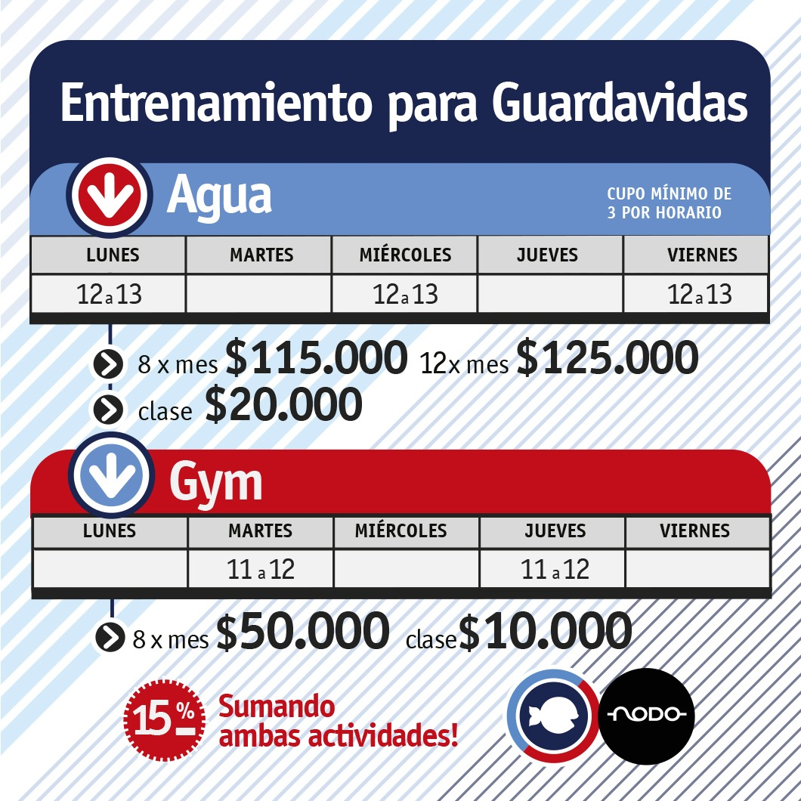

Entrenamiento para guardavidas
Rutinas online
Disponible próximamente
¿Qué es NODO?
NODO es un programa de entrenamiento para guardavidas.
Surge con el objetivo de brindar un espacio de preparación física y técnica durante todo el año, permitiendo que los guardavidas mantengan y mejoren su rendimiento para el ámbito laboral.
No es natación común
No tiene como objetivo enseñar a nadar ni perfeccionar estilos con fines recreativos (ej, no enseñamos a nadar over).
El enfoque está puesto en la preparación física profesional de los guardavidas.
En el caso de aspirantes a guardavidas, estudiantes de educación física o personas con experiencia previa en el medio, deberán tener una buena base de natación.
Estamos en Escualo Tandil
Los entrenamientos se realizan en Escualo Tandil, ubicado en Belgrano 1652
Días y horarios

Información e inscripciones
Para más información e inscripciones, por favor contactanos a través del WhatsApp de Escualo, o presencialmente en Belgrano 1652.